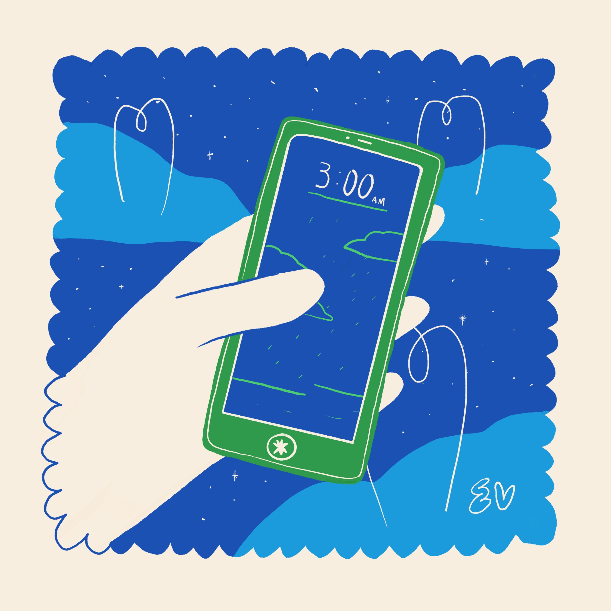

3am: el desvelo del amor
“3 AM” recorre el muy familiar sentimiento de dos personas que se buscan y no se logran encontrar, que intentan de todas las maneras conectar pero que, por una razón o por otra, no logran hallarse en el mismo espacio. La ansiedad que deviene de la lucha entre corazón y mente se convierte en un insomnio insoportable en el que nos envolvemos pensando que, tal vez, esa otra persona también nos está pensando en un momento en que la noche empieza a anteceder al alba y el silencio abraza la oscuridad afuera de nuestra habitación. “‘3AM’ es una canción para una relación en espiral, que siempre se queda en nada. Narra desencuentros que te dejan despierto hasta las 3 de la mañana, intentando encontrar algún tipo acuerdo, en un punto parece que todo va a mejorar, pero luego el ciclo se repite y sigue sin suceder nada.
Por esos días estaba sintiéndome muy frustrada con una relación, me estaba dejando despierta hasta las tres de la mañana. Me sentía cansada física y mentalmente: ¡no me dejaba dormir! Estaba cansada de eso. Empecé a jugar con la melodía. La letra inicial era: ‘podrían pasar un montón de cosas’. A Adán le gustó mucho y empezamos a trabajar desde ahí, con todo lo que yo tenía en la cabeza. A veces las cosas no salen como queremos, sin embargo, es preciso entender que el tren no se va si no estamos con esa persona que deseamos. A veces es importante hacer las maletas y embarcarnos solos en una nueva aventura.